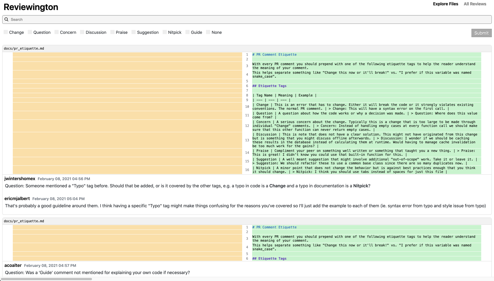
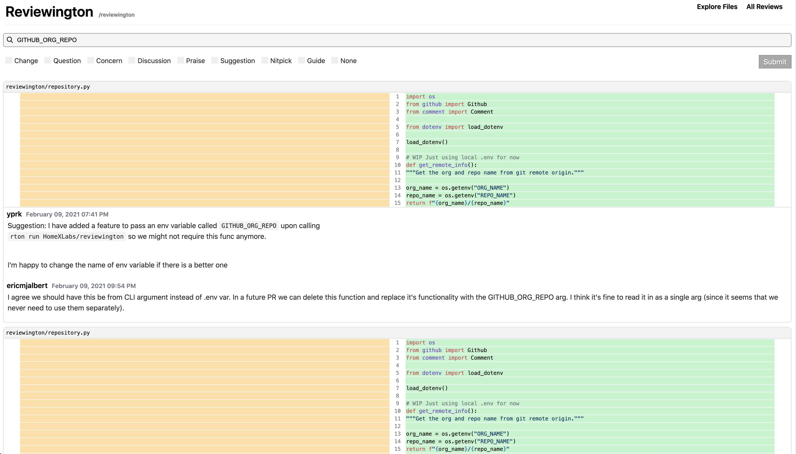

Reviewington is an open source tool that lets you search through all pull request comments in a GitHub repository. This makes it quick and easy to find previous discussions that can help you better understand the code!
View all review comments in your repository. Reviewington runs locally and uses your GitHub account, so you can use it in private repositories with the knowledge that you aren't compromising on security.
Search for comments by file or directory. Filter out the comments you aren't interested in so you can find what you're looking for quickly.
Can't figure out what that variable is for? Search for it! Your search queries will be matched against comments, code, and the commenters' usernames.
If your review comments follow Reviewington's recommended etiquette you can filter for certain types of comments as well. You can enforce review etiquette using the companion GitHub action.